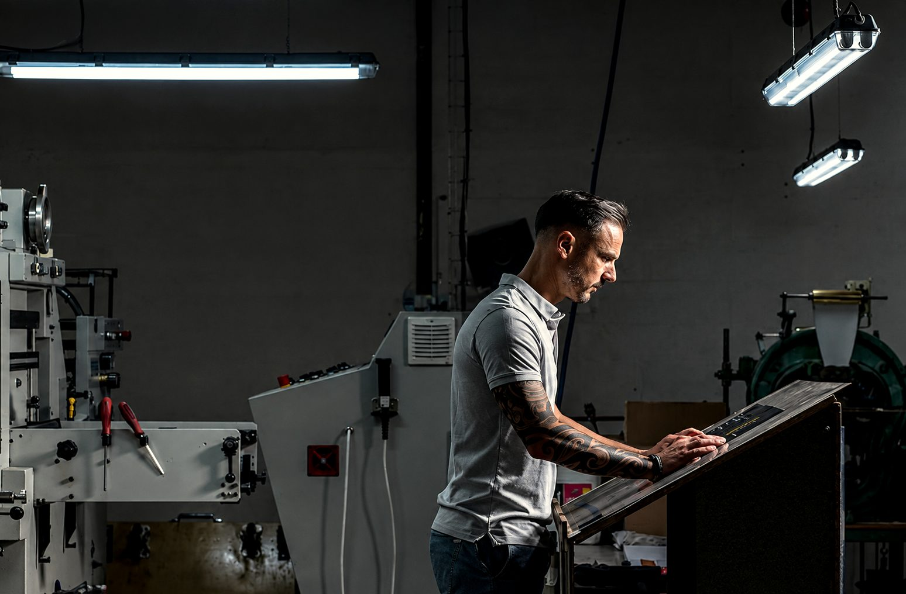
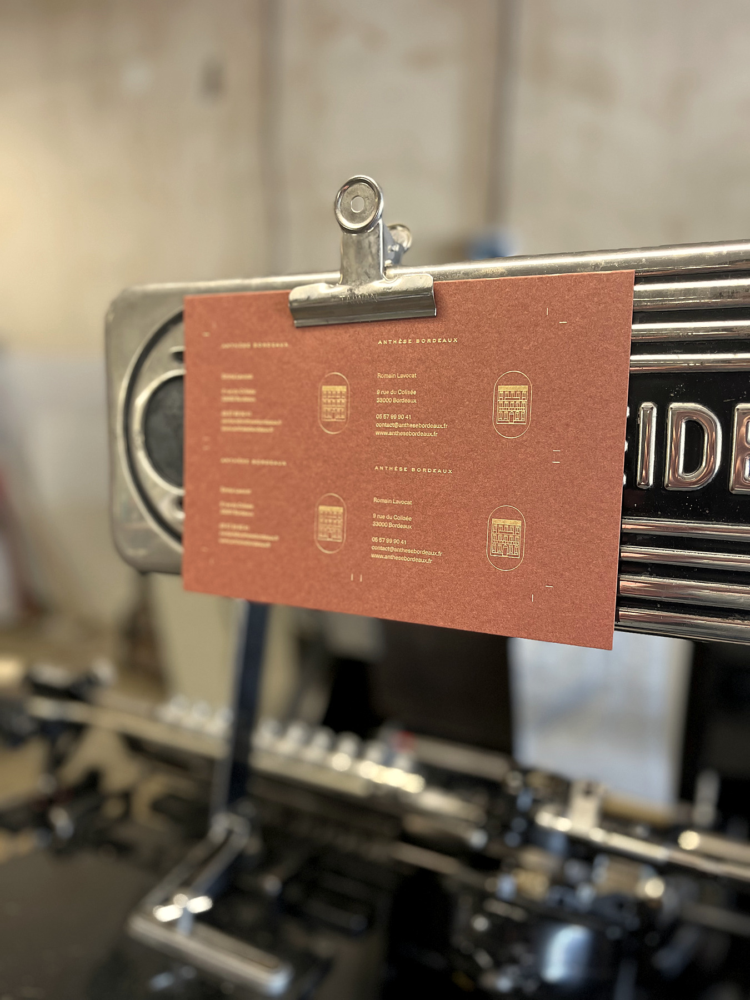
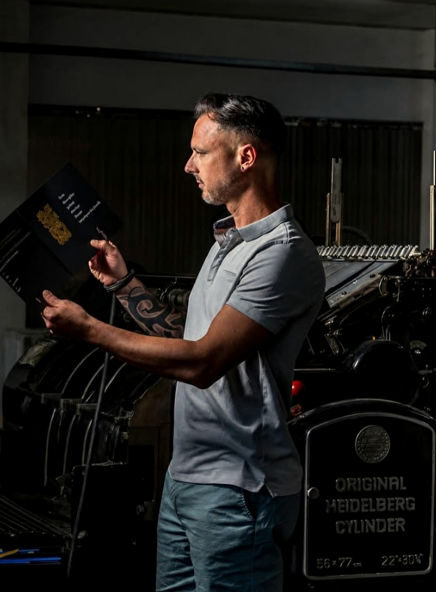
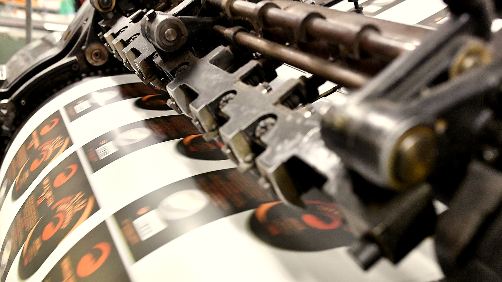
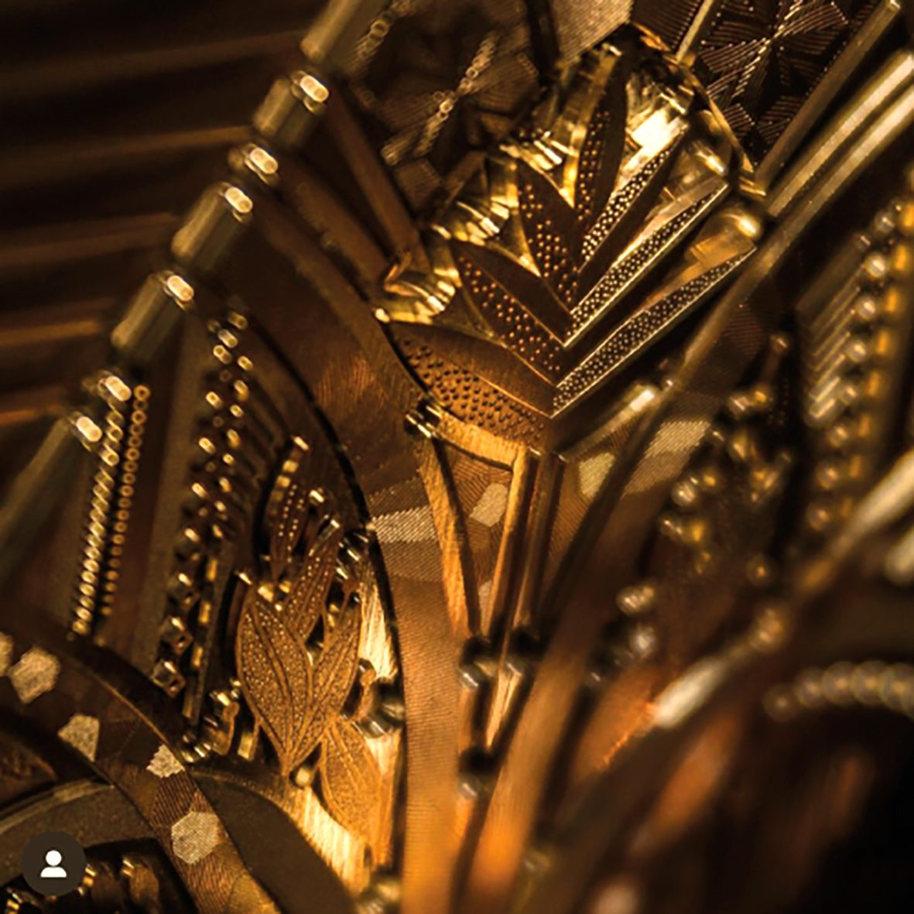
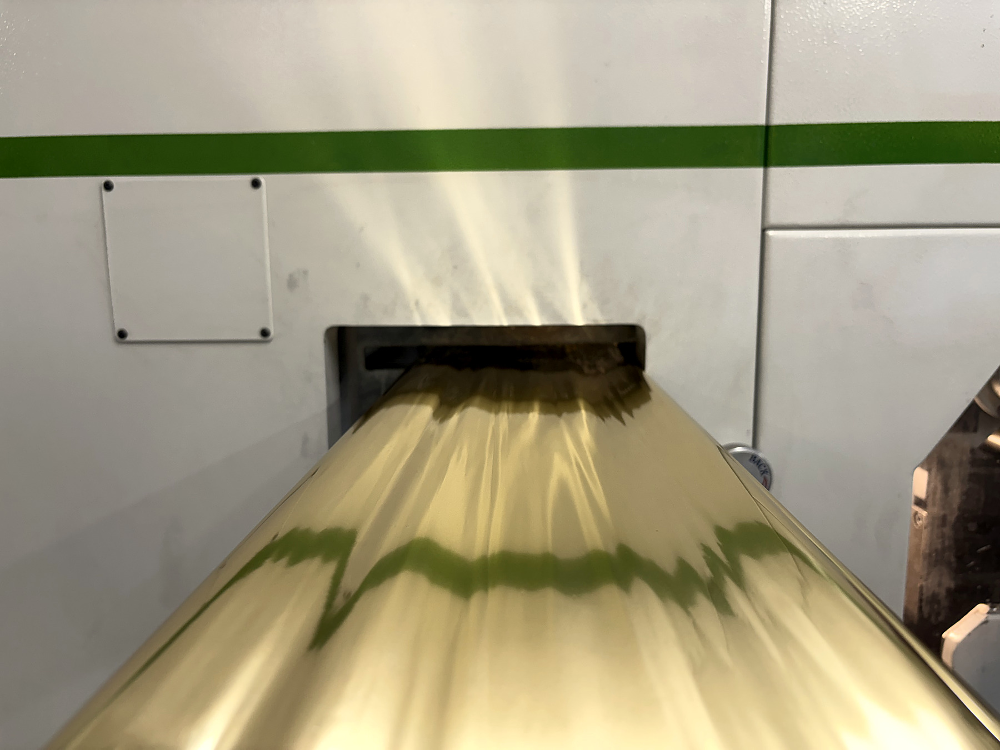

Accueil / L'atelier
L'atelier
Depuis 2004 à Morlaas, au pied des Pyrénées, un atelier entièrement consacré à l'ennoblissement. Nous travaillons pour les imprimeurs, avec une seule idée en tête : que la finition tienne la promesse de l'emballage.

Le parcours de vos feuilles
Quatre étapes, un seul interlocuteur. Vous savez à chaque moment où en est votre projet.
- 1
Devis
Vous décrivez votre projet, nous chiffrons la finition.
- 2
Réception de vos feuilles
Vos imprimés arrivent à Morlaas, prêts à ennoblir.
- 3
Production
Préparation, calage et contrôle de la série.
- 4
Retour
Les feuilles finies repartent vers votre atelier.
Notre façon de travailler
Vos feuilles imprimées ont déjà de la valeur quand elles arrivent chez nous. Tout notre travail consiste à leur ajouter la finition, sans rien leur faire perdre.

Vos fichiers vérifiés
Avant toute production, nous relisons vos fichiers et vous signalons ce qui pourrait poser problème.

Des essais avant la série
Pour un support délicat ou un décor exigeant, nous réalisons un essai et le validons avec vous.

Le soin de vos feuilles
De la réception au retour, chaque feuille est manipulée, contrôlée et conditionnée avec attention.

Contrôle
En production Outillage
Outillage
Gravure Films
Films
Dorure
Nous trouver
- Adresse
- ZI Berlanne
13 rue des Landes
64160 Morlaas - Horaires
- Du lundi au vendredi
8 h 30 – 17 h 00 - Téléphone
- 05 59 14 92 35
- contact@pyrenees-dorure.com
À 15 minutes de Pau. Pyrénées Dorure Découpe est membre du groupe BK'ART.
Un projet ? Parlons-en.
Dorure à chaud, gaufrage, découpe, pelliculage et vernis sélectif, dans le même atelier.